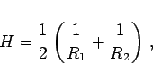
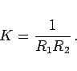
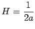
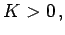
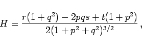
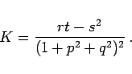
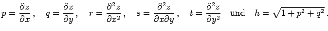
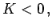

Inhalt Index DeskTop Bronstein

 Geometrie Differentialgeometrie Flächen Krümmung einer Fläche
Geometrie Differentialgeometrie Flächen Krümmung einer Fläche


Zur numerischen Charakterisierung der Krümmung einer Fläche werden hauptsächlich zwei Größen benutzt:
|  | (3.535a) |
|  | (3.535b) |
| Beispiel A |
|
Für den Kreiszylinder mit dem Radius a ist  und |
| Beispiel B |
|
Für elliptische Punkte ist  für hyperbolische K < 0 und für parabolische |
|  | (3.536a) |
|  | (3.536b) |
Die Bedeutung von p, q, r, s, t entspricht (3.532b):

| Beispiel A |
|
z.B. die Kugel. |
| Beispiel B |
|
 z.B. die Pseudosphäre (obere Abbildung), d.h. die Rotationsfläche der Traktrix (untere Abbildung) bei Rotation um die Symmetrieachse.
|